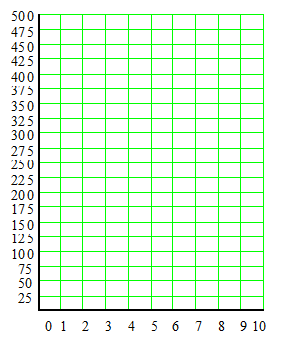

In this Lesson, the slope-intercept formula is treated very briefly. Students should have mastered the slope-intercept form in elementary algebra, and it has already appeared in this course as the form for a linear model. We also review the coordinate formula for slope, \(~m=\dfrac{y_2-y_1}{x_2-x_1}\text{,}\) and the notion of net change.
The chief objective of this Lesson in the point-slope formula. Besides being able to use the formula, we want students to understand two ideas:
The point-slope formula is really the same as the coordinate formula for slope, but used in a different way.
We’d also like students to understand the syntax of the formula, i. e. starting at a point \((x_1,y_1)\) and using the slope to find any other point on the line, rather than just memorizing it.
Students may have been taught to find a linear equation by substituting a point into the slope-intercept formula to find \(b\text{,}\) but at this stage it is important that they master the point-slope formula. Finding a linear equation to fit two points is one of the most useful skills they will learn in this course. Note that we give two alternate forms for the formula: the fractional form, \(~\dfrac{y-y_1}{x-x_1} = m\text{,}\) is easier for students if the slope is a common fraction. The form \(~y=y_1+m(x-x_1)~\) captures the mechanics of the formula, and will occur in calculus.
For students, the hardest part of using the formula in an application is identifying the two points to use. Encourage them to make a short table, starting by deciding which is the input variable and which is the output.
Activity1.5.1.Slope-Intercept Form.
In England, oven cooking temperatures are often given as Gas Marks rather than degrees Fahrenheit. The table shows the equivalent oven temperatures for various Gas Marks.
Gas Mark
3
5
7
9
Degrees
325
375
425
475
Plot the data and draw a line through the data points.
Calculate the slope of your line.
Estimate the \(y\)-intercept from the graph.

Write an equation that gives the temperature, \(T\text{,}\) in degrees Fahrenheit, in terms of the Gas Mark, \(G\text{.}\)
Activity1.5.2.Working with Formulas.
We now have several new formulas to work with. Solve each formula for the indicated variable:
\(m=\dfrac{\Delta y}{\Delta x} \hphantom{00000000000000} \Delta y =\)
\(\Delta y = y_2 - y_1 \hphantom{00000000000} y_2 = \)
\(\Delta x = x_2 - x_1 \hphantom{00000000000} x_2 = \)
Suppose you are studying the graph of a line, \(y=mx+b\text{.}\) Explain the difference between what the statements \(x=2\) and \(\Delta x = 2\) mean.
Activity1.5.3.Finding a Linear Model.
The temperature at which water freezes depends on its dissolved mineral content. So sea water does not freeze at exactly 32 \(\degree\) F because of its salinity. A common unit for measuring salinity is parts per thousand, or ppt. For example, salinity of 8 ppt means 8 grams of dissolved salts in each kilogram of water. Here are some data for the freezing temperature of water.
Salinity, ppt \(S\)
8
12
20
Freezing Temperature, \(\degree\) F, \(T\)
31.552
31.328
30.88
Do these data points describe a linear model? Why or why not?
Use the point-slope formula to find a linear equation for freezing temperature, \(T\text{,}\) in terms of salinity, \(S\text{.}\)
Step 1: Find the slope
Step 2: Use the point-slope formula
What is the salinity of water that freezes at 32\(\degree\) F?
Sea water has an average salinity of 35 ppt. What is the freezing point of sea water?
The conversion formula from Celsius to Fahrenheit is \(F=\dfrac{9}{5} C + 32\text{.}\) What is the freezing point of sea water in degrees Celsius?
Subsection1.5.1Check Your Understanding
Which formula did you use to find the equation of the line in Activity 1?
If you graph the data in Activity 3, which variable goes on the vertical axis?
When you calculate a slope using data, how do you know which variable goes in the numerator of the slope ratio?
Which two formulas do you need to find the equation of a line that goes through two given points?
Subsection1.5.2Wrap-Up
In this Lesson, we worked on the following skills and goals related to linear models:
Identify the slope and \(y\)-intercept from the equation for a line
Interpret the slope and \(y\)-intercept in context
Use the coordinate formula to calculate slope
Use the point-slope formula to find an equation for a line
Find a linear model from two data points
Subsection1.5.3Questions for Writing or Discussion
Explain the difference between the slope-intercept form and the point-slope form for a linear equation.
How can you find the equation of a line from its graph?
How is the coordinate formula for slope related to net change?
Explain how to find an equation for a line through two points using two steps.
Concept Questions.
What do the coefficients in the slope-intercept form tell you about a line?
\(m\) is the slope; \(b\) is the \(x\)-intercept
\(m\) is the slope; \(b\) is the \(y\)-intercept
\((m,b)\) is a point on the line
\(m\) is the \(x\)-intercept; \(b\) is the \(y\)-intercept
What will be wrong with your answer if you accidentally compute the slope as \(~\dfrac{y_2-y_1}{x_1-x_2}\text{?}\)
The number will be too big.
The line will be decreasing.
That is the slope of the perpendicular line.
It will be the negative of the slope.
What do you get when you substitute the point \((0,b)\) into the point-slope formula?
\(\displaystyle x=0\)
\(\displaystyle y=mx+b\)
\(\displaystyle y=b\)
\(\displaystyle ax+by=0\)
What is the easiest way to find the slope of the line \(~18x-42y=60\text{?}\)
Solve for \(y\) to get the slope-intercept form.
Find the intercepts and use them to compute the slope.
Graph the line and compute \(\dfrac{\Delta y}{\Delta x}\text{.}\)
Find values of \(x\) and \(y\) that make the equation true.